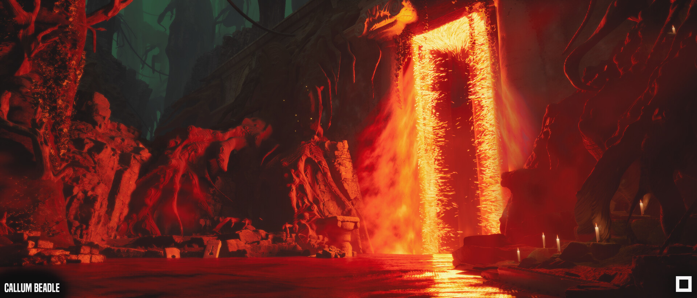

The Trail Ends
An internal project at Digital Salmon, where we were tasked with creating a real-time game art piece. I led it from the initial concept through to working with the team on the end result.
Almost all assets came from Quixel's Megascans, as the focus was not asset creation but demonstrating art capability in composition, lighting and colour. It really pushed me, and I learnt a lot.
- Role
- Project lead, from initial concept to final piece
- Context
- Digital Salmon
- Tools
- Quixel Bridge, Unreal Engine, Maya, ZBrush
Credits
- Portal VFX:Sam Mayson